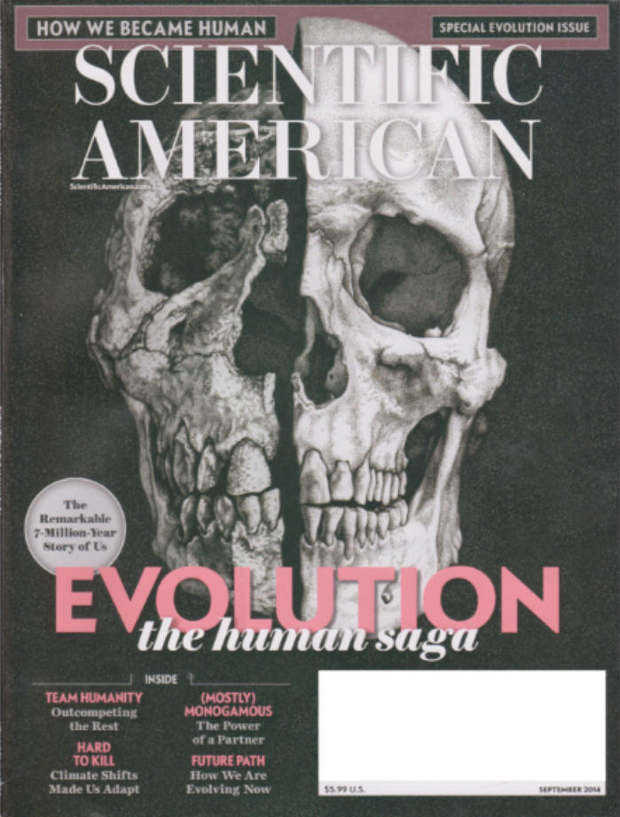
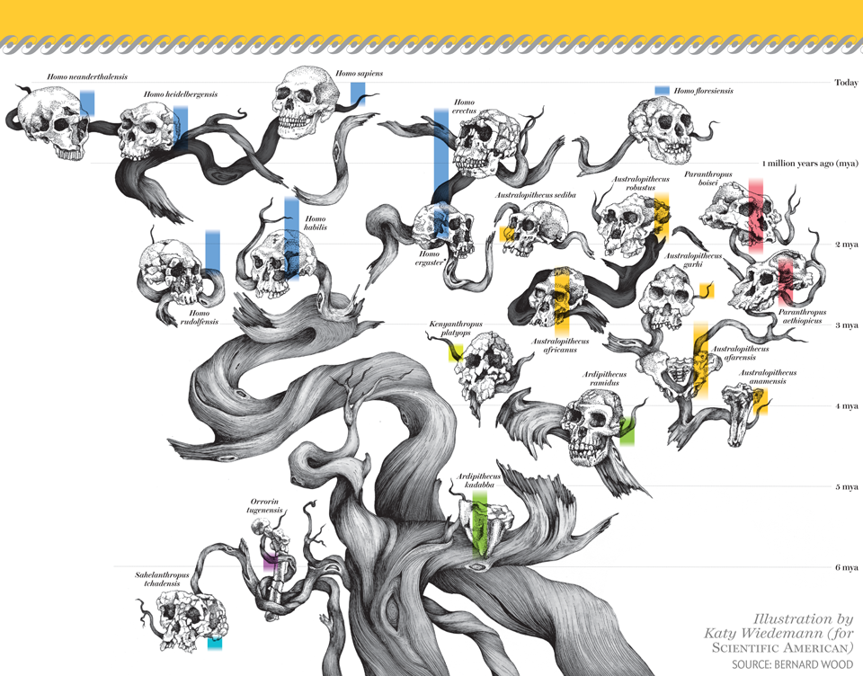

| Feature Article - September 2014 |
| by Do-While Jones |
Scientific American says the theory of human evolution needs revision.
The cover of this month's issue of Scientific American promised to be a "special evolution issue" about "Evolution, the human saga," which tells "the remarkable 7-million-year story of us." We strongly encourage you to run right out and buy the issue because it basically says that practically everything ever written about human evolution in the past is wrong.
 |
|---|
The whole issue is a gold mine of admitted evolutionary mistakes, too many to include in our "six-page newsletter" (which is eight pages this month), so we will have to settle with sharing a few summary statements.
|
We observers may not yet know how these fossils will rewrite the story of our origins, but history tells us that they will indeed rewrite it. ... Awash in this flood of fresh insights, scientists have to revise virtually every chapter of the human saga, from the dawn of humankind to the triumph of Homo sapiens over the Neandertals and other archaic species. 1 |
Notice that the "scientific" account of human origins is actually a "story." Furthermore, it is a historic fact that the story keeps changing, because the story has always been wrong.
The article then presents a "CliffsNotes" summary of what evolutionists have traditionally believed about human evolution. You can read it for yourself, but it will just waste your time because,
|
As it turns out, fossil and genetic evidence amassed since then has cast doubt on or downright disproved every element of that CliffsNotes accounting of our origins. 2 |
That's what makes it so hard for us to write about human evolution. Whenever we say, "Evolutionists believe ..." the evolutionists counter with, "No, we don't believe that any more."
So, what do evolutionists believe now about human evolution? Honestly, it is hard to say because their theories are so confusing and inconsistent; and we don't want to be accused of misrepresenting what they believe. Scientific American published a diagram of the human evolutionary tree on pages 40 and 41 of their special evolution issue, but it looks more like a pile of broken branches lying on the ground than a tree.
 |
|---|
The fact that this tree doesn't look like previous trees is not new. We published a comparison of the various speculative human trees more than a decade ago, 3 which you may wish to review.
Of particular note is that Scientific American's September 2014 tree shows Homo rudolfensis, Homo habilis, Homo ergaster, and Homo erectus as separate species. Last November, the scientific consensus seemed to be that they were all one species, based on the analysis of Skull 5. 4 Does Scientific American not agree with the consensus, or has the consensus changed?
We don't want to sound like we are complaining; but it makes it really hard for us to write about what evolutionists believe about human evolution when they keep changing their minds. It would make our life so much easier if they would just pick one lie and stick with it!
Unfortunately, Scientific American says we aren't going to get a consistent story for decades.
|
In Brief Tracing the evolutionary ancestors of Homo sapiens was once thought to be a relatively straightforward matter: Australopithecus begat Homo erectus, which begat Neandertals, which begat us. Over the past 40 years fossil finds from East Africa, among other things, have completely shattered that hypothesis. The latest evidence shows that several different hominin species shared the planet at different times. Figuring out how they are all related--and which ones led directly to us--will keep paleontologists busy for decades to come. 5 |
Keeping paleontologists busy for decades is really all that matters, isn't it? We would not want them to be unemployed!
Surprisingly, they admit,
|
Just because two fossils have similarly shaped jaws or teeth does not mean they share a recent evolutionary history. 6 |
But paleontologists construct evolutionary histories based on similarly shaped jaws or teeth all the time!
Despite the fact that there isn't any real evidence that evolution actually happened, that doesn't stop paleontologists from speculating about how it happened.
|
Such climate changes may have played a big role in shaping human evolution, a growing number of scientists believe. 7 |
If more scientists believe it now, that must mean fewer scientists believed climate played a role in the past. Given the view that anyone who doesn't believe the consensus isn't a "real scientist," does the fact that they did not agree with current consensus (if that is, in fact, the current consensus) mean that they weren't "real scientists" then? If anybody who doesn't believe in evolution isn't a "real scientist," does that mean that anyone who doesn't believe in a particular evolutionary mechanism isn't a "real scientist?"
Did climate change cause evolutionary change because of a changing diet? Or, did climate change cause evolutionary change because of exercise? (It has been claimed that when the forests gave way to grasslands because of climate change, ape men had to switch from swinging through the trees to walking upright.)
|
Abandoning the trees lies at the origin of our vastly altered anatomy and undeniably set the stage for later adaptations in our lineage, but it did not step up the evolutionary tempo of events. 8 |
Undeniably? Really?
Or, did climate change actually have nothing to do with it? Did intellectual challenges force us to evolve instead?
|
Why has evolution in our family been unusually rapid? By what mechanism did this acceleration take place? ... Almost certainly the answer involves our ancestors' ability to meet challenges by producing stone tools, clothing, shelter, fire, and so forth--objects referred to as material culture because they reflect how their users lived. 9 |
The comment about human evolution being unusually rapid refers back to the previous point in the article that the presumed rate of evolutionary change in human beings isn't consistent with the presumed rate of evolutionary change in other animals--but let's not let that distract us from the notion that making tools caused us to evolve. How did that happen?
|
This radical new behavior implies that hominin diets had broadened rapidly, from being primarily vegetarian to relying more on animal fats and proteins--though whether by scavenging or by active hunting at this stage is unknown. This richer diet underwrote the later rapid expansion of the energy-hungry brain among members of Homo. 10 |
If animal fats are so much better for the brain than vegetables, why is Michelle Obama trying to get school lunch programs to cut out pizza and hamburgers, and serve more vegetables instead? Doesn't she want our brains to evolve even more?
But seriously, it was war that really caused us to evolve!
|
The rate of brain gain ... hints at an arms race of sorts, as the adoption of projectile weapons made human groups one another's most dangerous predators even as they competed economically for resources. 11 |
Or, maybe it was social cooperation, not war, which caused us to evolve.
|
The traditional explanation of rapid brain development in hominins, favored by evolutionary psychologists, is known as gene-culture coevolution. This process involves the steady operation of natural selection on successive generations of individuals, with powerful positive feedback between innovation in the biological and cultural spheres. ... A little thought, however, suggests there must have been more to it than that. 12 |
The "more to it" is "chance." We just evolved by accident, without any cause at all.
Ian Tattersall ends his article with a semi-religious observation.
|
This perspective on our evolution, in which our admittedly remarkable species emerged from a rapid sequence of random external events entirely unrelated to our ancestors' specific qualities, is substantially less exalting than the traditional idea of stately improvement over the eons. ... Seeing our amazing species as an evolutionary accident, though, contains a profound lesson. For if we were not shaped by evolution to be something specific--fitted to our environment and tailored to a purpose--then we have free will in a way that other species do not. We can indeed make choices about the ways in which we behave. And this means, of course, that we must accept responsibility for those choices. 13 |
Tattersall's view of free will is connected with his belief in evolution. We won't go any farther than the simple observation that there is a connection in his mind. We won't make any judgments about which one caused the other, or whether his personal beliefs are right or wrong--but we will make this observation:
When I was a child, I had a dog that was left in our basement for what we thought was going to be a short time. Unfortunately, our family was unavoidably delayed for a very long time. When we returned, we discovered him cowering in a corner because he could not hold it any more and had answered the call of nature. He knew it was wrong to defecate there, and he accepted responsibility for his choice. At least one species other than humans makes choices and accepts responsibility for those choices, so Tattersall is factually wrong on that point.
The special issue was divided into three sections. So far, we have only discussed the first section addressing "Where We Came From."
After saying that all previous answers to the question, "Where did we come from?" have been wrong, and that the answer will continue to change, and they don't have a good explanation right now, Scientific American then goes on to discuss "What Makes Us Special."
Evolutionists are in the difficult position of trying to have it both ways. On one hand, evolutionists generally want to claim that humans are just animals, no different from any other animal. On the other hand, they have to acknowledge that we really are different from animals.
The final section addresses the question, "Where Are We Going?" It is just a lot of speculation about how we will evolve in the future. If one doesn't know how evolution worked in the past, how can one possibly know what it will do in the future? Just because a scientist says something is going to happen doesn't mean it will actually happen.
We don't dispute the value in pondering what the future might hold, and how one might prepare to meet that eventuality. We only dispute the value of basing those thoughts on something that didn't really happen in the past. If the premise is wrong, the conclusion can only be right by accident.
We really encourage you to read the whole Scientific American issue from cover to cover because we feel that the most compelling arguments against the theory of evolution actually come from evolutionists themselves. It is hard for us to imagine anyone reading this issue without asking themselves, "Are they really serious?"
Please, as you read it, ask yourself, "How do they know that?" Or, perhaps a better question is, "Why do they think they know that?"
The theories of evolution in general, and human evolution in particular, are theories that Leonardo da Vinci would say, "begin and end in the mind." Leonardo was one of the greatest scientists of all time. He knew what true science is. Here is what he said about true science.
|
No human investigation can be termed true science if it is not capable of mathematical demonstration. If you say that the sciences which begin and end in the mind are true, this is not conceded, but is denied for many reasons, and foremost among these is the fact that the test of experience is absent from these exercises of the mind, and without these there is no assurance of certainty. 14 |
There is no assurance of certainty regarding human evolution because it isn't true science--it is just an "exercise of the mind." The transformation of one kind of creature into another has never been observed in nature or in the laboratory. It has not passed the "test of experience."
It isn't "anti-science" to be against the theory of evolution because the theory of evolution isn't scientific. Science is against evolution.
| Quick links to | |
|---|---|
| Science Against Evolution Home Page |
Back issues of Disclosure (our newsletter) |
| Web Site of the Month |
Topical Index |
Footnotes:
1
Kate Wong, Scientific American, September 2014, "The Human Saga", page 38, https://www.scientificamerican.com/article/the-new-science-of-human-origins/
2
ibid., page 39
3
Disclosure, January 2000, "Human Evolution"
4
Disclosure, November 2013, "Skull 5"
5
Bernard Wood, Scientific American, September 2014, "Welcome to the Family", page 43, https://www.scientificamerican.com/article/the-latest-fossil-finds-make-the-puzzle-of-human-evolution-harder-than-ever-to-solve/
6
ibid., page 47
7
Peter B. deMenocal, Scientific American, September 2014, "Climate Shocks", page 50, https://www.scientificamerican.com/article/new-evidence-shows-how-human-evolution-was-shaped-by-climate/
8
Ian Tattersall, Scientific American, September 2014, "If I Had a Hammer", page 57, https://www.scientificamerican.com/article/new-twist-added-to-the-role-of-culture-in-human-evolution/
9
ibid., page 56
10
ibid., page 57
11
ibid., pages 57-58
12
ibid., page 58
13
ibid., page 59
14
Leonardo da Vinci quoted by Carlo Pedretti, Leonardo Art and Science, TAJ Books, 2004, page 168.